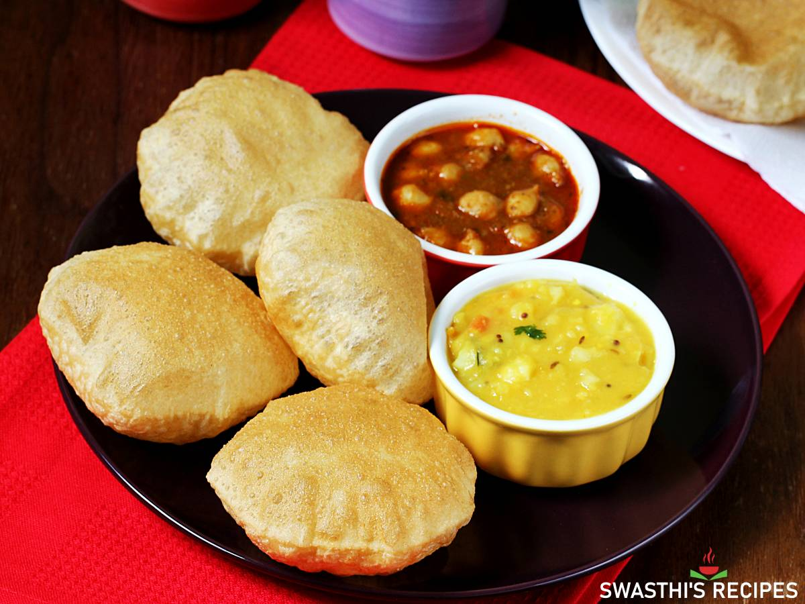
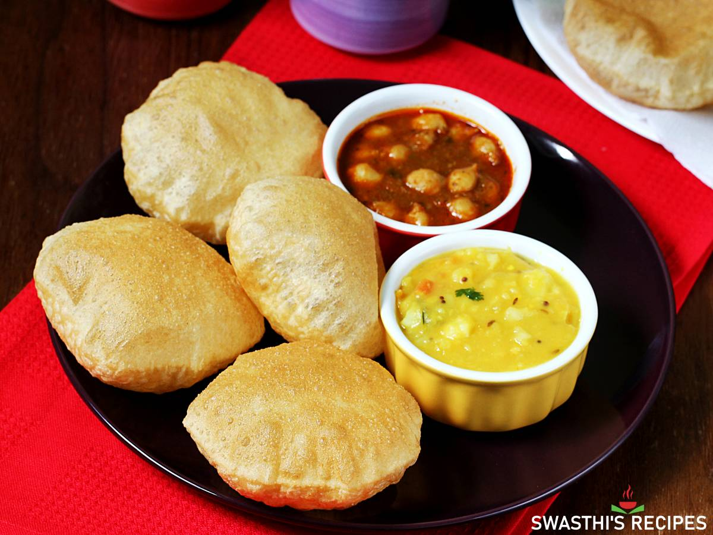

CULINARY CRAFTS
"Welcome to our culinary haven! At CULINARY CRAFTS, we are passionate about celebrating the art of cooking and the joy of sharing delicious meals with loved ones. Our platform is a melting pot of diverse flavors, culinary traditions, and innovative recipes curated to inspire both seasoned chefs and kitchen newcomers alike. Whether you're looking for quick and easy weeknight dinners, indulgent desserts, or creative twists on classic dishes, we've got you covered. Join us on a journey where every recipe tells a story, and every meal is an opportunity to create unforgettable memories. Explore, savor, and let your culinary adventures begin!


 
